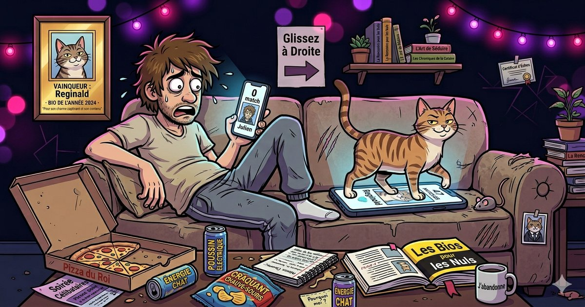

Guide • Avril 2026
50 Phrases d'Accroche
Qui Marchent Vraiment en 2026
Tu as le match. Maintenant, il faut ouvrir la conversation. Voici 50 phrases testées qui obtiennent des réponses — classées par style et par situation.

Pourquoi ton premier message est crucial
Tu as 3 secondes. C'est le temps qu'une personne prend pour décider si elle va répondre à ton message ou l'ignorer. "Salut, ça va ?" c'est l'équivalent textuel de regarder ses chaussures en soirée. Personne n'a envie de répondre à ça.
Les données le confirment : les messages personnalisés ont un taux de réponse 3 fois supérieur aux messages génériques. Et les messages qui posent une question ont 2 fois plus de chances d'obtenir une réponse que les affirmations.
Voici 50 phrases qui cassent la glace sans être lourdes, classées par catégorie pour que tu trouves celle qui correspond à ton style.
Les 3 règles d'or du premier message
Pose une question. Un message qui attend une réponse en obtient une. Une affirmation comme "T'es trop belle" est un cul-de-sac conversationnel.
Sois spécifique. Si tu peux envoyer le même message à 100 personnes, c'est que c'est trop générique. Rebondis sur un détail de la bio ou des photos.
Court > long. Un message de 2 lignes max. Si tu écris un roman en premier message, tu fais fuir.
Les drôles Taux de réponse élevé
L'humour reste la meilleure arme. Si tu la/le fais sourire, t'as déjà gagné.
"On est censés faire semblant de s'être rencontrés autrement que sur une app, ou on assume direct ?"
"Sur une échelle de 1 à brunch du dimanche, t'es à quel niveau de plan ce weekend ?"
"J'ai une théorie : les gens qui mettent des photos avec des poissons sur Tinder sont tous les mêmes. Prouve-moi que je me trompe."
"Deux options : 1) on fait la conversation polie classique, 2) tu me donnes ton take le plus controversé sur la pizza. Je recommande l'option 2."
"Je suis nul en premier message mais excellent en deuxième rendez-vous. Faut juste passer le cap."
"J'ai hésité 10 minutes entre t'écrire un truc intelligent ou t'envoyer un emoji. T'as failli recevoir 🦆."
"Si on était dans un film, là c'est le moment où je dis un truc tellement parfait que tu tombes amoureuse. Mais on est sur Tinder, donc... salut 👋"
"Sérieux, t'as souri combien de fois aujourd'hui ? Parce que je compte bien augmenter le score."
"Ta bio dit que t'aimes les chiens. Le mien veut savoir..."
"Je vais pas te mentir, j'ai stalké tes photos 3 fois avant..."
Les audacieuses Pour ceux qui osent
Un cran au-dessus. Pas vulgaire, mais direct et assumé. Ça passe ou ça casse — mais quand ça passe, c'est une conversation assurée.
"Tu viens de ruiner ma productivité pour le reste de la journée. Je t'envoie la facture."
"Je vais être honnête : j'ai failli pas t'écrire parce que t'es clairement hors de ma ligue. Mais j'aime vivre dangereusement."
"Est-ce que c'est trop tôt pour parler de notre chanson ? Parce que j'ai déjà une playlist en tête."
"Si je t'invite prendre un café, tu dirais oui tout de suite ou tu me ferais mariner un peu d'abord ?"
"Dis-moi le truc le plus random que t'as fait cette semaine. Je commence : j'ai goûté du wasabi au chocolat. Et oui, je recommande."
"On fait un deal : tu m'apprends un truc que je sais pas faire, je t'apprends un truc que tu sais pas faire. Premier round au café."
"J'ai une théorie sur toi rien qu'en voyant tes photos..."
"On saute la phase small talk ? Dis-moi un truc que..."
Ces phrases sont génériques. Imagine des accroches créées à partir de TA personnalité.
Tu veux des phrases d'accroche faites pour TOI ?
Nos experts créent 10 phrases d'accroche uniques + 5 bios sur-mesure à partir de tes réponses. Pas du copié-collé — du sur-mesure qui te ressemble.
Obtenir mes phrases sur-mesure — 9,97$Les personnalisées Les plus efficaces
Ces phrases rebondissent sur un élément de la bio ou des photos de la personne. C'est le niveau pro : ça montre que tu as vraiment regardé le profil.
Si elle a une photo de voyage :
"C'est [pays] sur ta 3ème photo ? Je prépare un voyage là-bas, t'as un spot secret à me recommander ?"
Si il/elle a un animal :
"Ok soyons clairs : je suis là pour toi, mais si ton chien est aussi cool qu'il en a l'air sur la photo, c'est peut-être lui que je viens voir."
Si la bio mentionne la cuisine :
"Ta bio dit que tu cuisines bien. Le mieux c'est de vérifier. Quel est ton plat signature ?"
Si la bio mentionne un sport :
"[Sport] ? Ça m'impressionne. C'est le genre de truc que je dis que je vais essayer depuis 3 ans. T'as des conseils pour un débutant ?"
Si la bio contient une référence pop culture :
"Tu cites [série/film] dans ta bio. Question vitale : quel est ton épisode/scène préféré(e) ? C'est un test, y'a des mauvaises réponses."
Si elle a une photo en groupe :
"La photo de groupe, c'est la 2ème. Mais j'ai reconnu tout de suite que c'était toi. C'est le sourire."
"Je vois que t'aimes [hobby]. Challenge : tu m'apprends..."
"Ta bio dit [citation]. Ça vient de [auteur] non ?..."
Les questions originales Brise-glace parfait
Quand tu ne sais pas quoi dire, pose une question originale. C'est simple, efficace, et ça lance une vraie conversation.
"Question cruciale : ananas sur la pizza, oui ou non ? Réfléchis bien, c'est un dealbreaker."
"Si tu pouvais dîner avec une personne (vivante ou morte), tu choisirais qui ? Et pourquoi c'est pas moi ?"
"Dimanche parfait : grasse matinée + Netflix, ou lever tôt + aventure ? Y'a pas de mauvaise réponse. Enfin si, mais je dirai pas laquelle."
"T'as un talent caché dont personne se doute ? Le mien c'est de trouver une place de parking en moins de 30 secondes."
"Si ta vie avait une bande-son, ce serait quoi le premier morceau ?"
"C'est quoi le dernier truc qui t'a fait rire aux larmes ? J'ai besoin d'idées, ma playlist humour est en panne."
"Si tu devais déménager demain dans n'importe quel pays..."
"Dernière série que t'as binge-watchée en une nuit ?..."
Les phrases à ne JAMAIS envoyer
"Salut, ça va ?" — 90% des gens envoient ça. Tu te noies dans la masse.
"T'es trop belle / T'es trop beau" — Complimenter le physique en premier message, c'est ennuyeux et superficiel.
"Wesh" / "Hey 😏" / "Yo" — Aucun effort = aucune réponse.
"Tu fais quoi dans la vie ?" — C'est un interrogatoire de police, pas une conversation.
"Je suis pas doué pour les premiers messages haha" — Tu viens de montrer un manque de confiance dès la première ligne.
Les messages copiés-collés de 15 lignes — Si ça sent le copié-collé, c'est ignoré instantanément.
L'astuce que les pros utilisent
Les phrases d'accroche génériques, ça dépanne. Mais les phrases qui fonctionnent vraiment sont celles qui sont adaptées à ta personnalité.
Un mec drôle qui envoie une phrase sérieuse, ça sonne faux. Une fille confiante qui envoie une phrase timide, ça ne colle pas. Le secret, c'est la cohérence entre ta bio, tes photos et ton premier message.
C'est pour ça que chez BioParfaite, on ne crée pas juste des bios — on crée aussi 10 phrases d'accroche personnalisées qui vont avec ta personnalité. L'ensemble est cohérent, naturel, et ça se sent dans les conversations qui suivent.
Marre de chercher la phrase parfaite ?
Réponds à quelques questions, et reçois 5 bios uniques + 10 phrases d'accroche créées sur-mesure pour toi. Compatible avec toutes les apps de rencontre.
Générer mes phrases sur-mesure — 9,97$Paiement unique • Livré par email en 2 min • Paiement sécurisé Stripe